文字
背景
行間


部活動報告
吹奏楽部千葉zozoマリンスタジアム演奏
投稿日時 : 2019/09/12
 sakura-h
sakura-h
吹奏楽部が、千葉zozoマリンスタジアムの佐倉市デーで演奏をしました。試合前の特設ステージで４曲披露し、その後試合開始のセレモニーで国歌の演奏を行いました。セレモニー中は、あいにくの雨になりましたが、立派な演奏ができました。佐倉市のゆるキャラの「カムロちゃん」も来場していました。
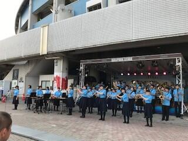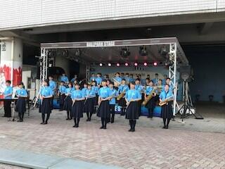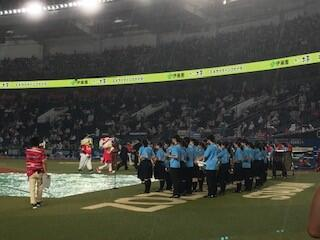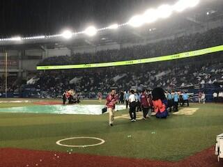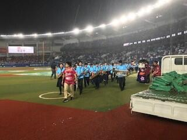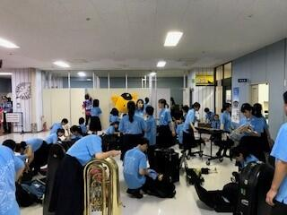
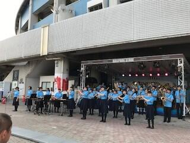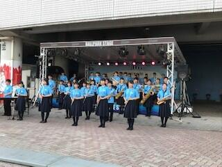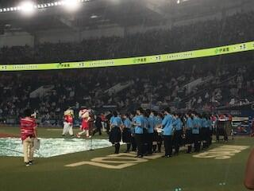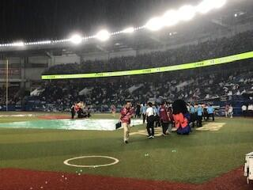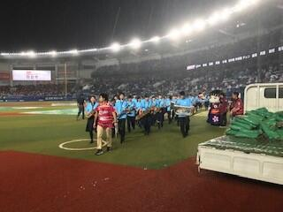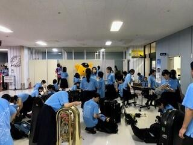
ダンス部 活動報告
投稿日時 : 2019/09/06
sakura-h

８月３１日（日）に八千代市にあるフルルガーデン八千代（噴水広場）にて、ダンスパフォーマンスを行いました。１年生、２年生合わせて２２名による様々なジャンルのダンスで観客を魅了しました。
佐倉剣道連盟錬成大会会
投稿日時 : 2019/09/03
sakura-h
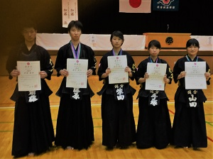
８月２５日（日）に行われた佐倉剣道連盟少年少女錬成大会、高校生男子の部で藤原（２年）が優勝､齋藤（２年）がベスト８、高校女子の部で柴田（１年）が優勝、手塚（２年）が２位入賞、山田（２年）が３位に入賞しました。
８月２５日（日）に行われた佐倉剣道連盟少年少女錬成大会、高校生男子の部で藤原（２年）が優勝､齋藤（２年）がベスト８、高校女子の部で柴田（１年）が優勝、手塚（２年）が２位入賞、山田（２年）が３位に入賞しました。
千葉県高等学校１・２年生バドミントン大会について
投稿日時 : 2019/08/06
sakura-h
令和元年７月２５日に第５ブロック大会が、成田市中台運動公園体育館で行われ、１年生の部で西田起菜が第3位となり、県大会の出場権を得ました。
令和元年８月１日に県大会が、成田市中台運動公園体育館で行われ、１年生の部に西田起菜が出場しましたが、残念ながら１回戦で敗退しました。この経験をしっかりとこれからの練習や大会に活かしていきます。
佐倉高校女子バレーボール部 総合体育大会県大会結果
投稿日時 : 2019/06/17
sakura-h
６月１５日、県大会１回戦、東葉高校と対戦し、セットカウント２－０で、惜しくも敗退してしまいました。
２年生中心のチームで、途中までリードし善戦しましたが、最後は振り切られてしまいました。３年生の２人は、１，２年生１３人をよくリードしてくれました。これを財産にして、新人戦も頑張ります。
カヌー部 全国総体・国体県予選報告
投稿日時 : 2019/06/06
sakura-h
全国高等学校総合体育大会カヌー競技千葉県予選会・第７４回国民体育大会カヌースプリント競技千葉県予選会は、６月１日（土）～６月２日（日）に香取市黒部川にて行われました。
結果、５種目９名の選手が８月２日（金）～８月６日（火）に鹿児島県菱刈カヌー競技場で行われる全国高等学校総合体育大会カヌー競技への出場権を獲得しました。
国体千葉県予選会では、４種目９名の選手が７月１４日（日）に山梨県精進湖カヌー競技場で行われる国体関東ブロック大会への出場権を獲得しました。また、国体千葉県予選会では成年の部もあり、３名の卒業生が出場し２名が関東ブロック大会への出場権を獲得しました。
◆全国高等学校総合体育大会カヌー競技出場権獲得
K2 小林京太②／今西悠人②
K4 藤崎雄太③／市川幹太③／小林京太②／今西悠人②
C1 金子誠生③
C2 樫村衛③／外岡晴雪③
C4 金子誠生③／瀧澤陸人③／樫村衛③／飯野一輝③
◆第７４回国民体育大会カヌースプリント競技関東ブロック大会出場権獲得
少年K2 柴田寛大②／袋布新太郎②
少年K4 藤崎雄太③／市川幹太③／小林京太②／今西悠人②
少年C1 金子誠生③
少年C2 高遠壮太②／成川輔②
成年C1 岸平悟（H27年度卒 立命館大学体育会カヌー部）
成年WK1 山下萌（H29年度卒 立命館大学体育会カヌー部）
◆競技風景
◆表彰・閉会式
◆集合写真 ◆OBOG（立命館大学体育会カヌー部）
カヌー部 関東大会県予選報告
投稿日時 : 2019/05/28
sakura-h
関東高等学校カヌー大会千葉県予選が５月５日（日）に香取市黒部川にて行われました。
結果、９種目２１名の選手が６月８日（土）~６月９日（日）に精進湖カヌー競技場（山梨県）で行われる関東高等学校カヌー大会への出場権を獲得しました。
保護者の皆様、たくさんの応援、写真提供等のご協力いただきありがとうございました。
※上位成績者（３位以内） 丸数字は学年
K1 ２位_今西悠人② ３位_小林京太②
C1 １位_金子誠生③ ２位_飯野一輝③ ３位_瀧澤陸人③
K2 １位_笹浪陽樹③／市川幹太③ ２位_柴田寛大②／鈴木晟丈②
WK2 ３位_稲員真央③／三好ひなた③
C2 １位_金子誠生③／瀧澤陸人③ ２位_飯野一輝③／下田悠平② ３位_樫村衛③／外岡晴雪③
K4 １位_藤崎③／今西②／笹浪③／市川③ ２位_綿貫③／袋布②／柴田②／鈴木②
WK4 ２位_稲員③／三好③／折戸③／伊藤③
C4 １位_金子③／瀧澤③／外岡③／下田② ２位_樫村③／飯野③／高遠②／成川②
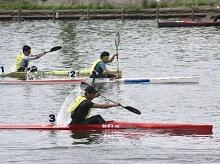
卓球部、地区大会で男女共に団体優勝！
投稿日時 : 2019/04/26
sakura-h
４月１９日、２０日と、関東インターハイ第５地区予選会に参加しました。団体戦では、男女共に優勝を果たし、２年半年ぶりに男女アベック優勝しました。個人戦の結果は以下の通りです。
個人戦シングルス
[男子] 準優勝 鈴木康太（３）、第３位 松本悠汰（３）、第５位 井上大地（２）
[女子] 第３位 伊藤愛実（３）、第５位 髙橋瞳実（３）・木川梨紗子（３）・木川悠希江（３）・大村日向子（２）
個人戦ダブルス
[男子] 優勝 鈴木康太（３）・松本悠汰（３）、準優勝 都築寛人（２）・中山陽介（２）
[女子] 準優勝 髙橋瞳実（３）・伊藤愛実（３）、第３位 木川梨紗子（３）・木川悠希江（３）
保護者の皆様を始め、ＯＢ、ＯＧの皆様におかれましては、日頃から卓球部の教育活動にご協力いただきありがとうございます。今後も応援、よろしくお願いいたします。
個人戦シングルス
[男子] 準優勝 鈴木康太（３）、第３位 松本悠汰（３）、第５位 井上大地（２）
[女子] 第３位 伊藤愛実（３）、第５位 髙橋瞳実（３）・木川梨紗子（３）・木川悠希江（３）・大村日向子（２）
個人戦ダブルス
[男子] 優勝 鈴木康太（３）・松本悠汰（３）、準優勝 都築寛人（２）・中山陽介（２）
[女子] 準優勝 髙橋瞳実（３）・伊藤愛実（３）、第３位 木川梨紗子（３）・木川悠希江（３）
保護者の皆様を始め、ＯＢ、ＯＧの皆様におかれましては、日頃から卓球部の教育活動にご協力いただきありがとうございます。今後も応援、よろしくお願いいたします。
剣道部 大会報告
投稿日時 : 2019/04/26
sakura-h
平成３１年４月２０日（土）２１日（日），芝山町農業者トレーニングセンターで行われた第６６回県関東個人第５地区予選会男子の部で，齋藤優璃（２年）が４位。女子の部で柴田愛美(１年)が、準優勝しました。５月１４日、１５日に船橋アリーナで行われる、県関東予選大会に出場します。
佐倉高校卓球部、公立高校大会でさらに躍進！
投稿日時 : 2019/04/08
sakura-h
３月２６日から３日間、千葉県公立高校卓球大会に参加しました。
男子は初戦の君津商業高校戦で苦戦したものの、その後は３－０のストレートで準決勝まで勝ち上がり、幕張総合高校に１－３で惜敗しましたが、３位入賞することができました。また、女子も準々決勝まで駒を進め、５位に入ることができました。
保護者の皆様を始め、ＯＢ、ＯＧの皆様におかれましては、日頃から卓球部の教育活動にご協力いただきありがとうございます。生徒たちの頑張りが徐々に結果に表れてきているように思います。今後も応援、よろしくお願いいたします。
男子は初戦の君津商業高校戦で苦戦したものの、その後は３－０のストレートで準決勝まで勝ち上がり、幕張総合高校に１－３で惜敗しましたが、３位入賞することができました。また、女子も準々決勝まで駒を進め、５位に入ることができました。
保護者の皆様を始め、ＯＢ、ＯＧの皆様におかれましては、日頃から卓球部の教育活動にご協力いただきありがとうございます。生徒たちの頑張りが徐々に結果に表れてきているように思います。今後も応援、よろしくお願いいたします。
剣道部 活動報告
投稿日時 : 2019/03/01
sakura-h
平成31年2月24日（日）に、佐倉高校にて第１回五校親善剣道大会が、開催されました。
参加校は、千葉高校・船橋高校・東葛飾高校・千葉東高校・佐倉高校の県立高校五校です。試合は、7人制（男子5人、女子2人）、リーグ戦で行われました。
結果： 1位 佐倉 2位 船橋 3位 千葉 4位 千葉東 5位 東葛飾
練習試合の一環としても行われたので、フリーオーダーの男女混合チーム。
普段高校の試合ではない団体での試合でしたが、大いに盛り上がり、正々堂々と普段の稽古の成果を発揮し、また楽しく、盛り上がった大会を行うことができました。今年度初めて行いましたが、来年度以降も続けて開催できればと考えております。
最後に、参加にご協力いただいた顧問の先生方に感謝申し上げます。
参加校は、千葉高校・船橋高校・東葛飾高校・千葉東高校・佐倉高校の県立高校五校です。試合は、7人制（男子5人、女子2人）、リーグ戦で行われました。
結果： 1位 佐倉 2位 船橋 3位 千葉 4位 千葉東 5位 東葛飾
練習試合の一環としても行われたので、フリーオーダーの男女混合チーム。
普段高校の試合ではない団体での試合でしたが、大いに盛り上がり、正々堂々と普段の稽古の成果を発揮し、また楽しく、盛り上がった大会を行うことができました。今年度初めて行いましたが、来年度以降も続けて開催できればと考えております。
最後に、参加にご協力いただいた顧問の先生方に感謝申し上げます。
全日本学生美術展入賞【美術部】
投稿日時 : 2019/02/14
sakura-h
「第６３回全日本学生美術展」に美術部から２名が入賞しました。
特選入賞 井上彩音さん（２年）
佳作入賞 吉原和奏さん（１年）
２０１９年２月１３日（水）から２月１９日（火）の期間、上野の「東京都美術館」で展示中です。
【全日本学生美術展】
http://www.craypas.com/artexhibition/
特選入賞 井上彩音さん（２年）
佳作入賞 吉原和奏さん（１年）
２０１９年２月１３日（水）から２月１９日（火）の期間、上野の「東京都美術館」で展示中です。
【全日本学生美術展】
http://www.craypas.com/artexhibition/
吉原さんの作品(青線囲み) | 井上さんの作品(青線囲み) |
正田杯関東高等学校選抜レスリング大会
投稿日時 : 2019/02/05
sakura-h
２月２日、３日に群馬県館林市において、「第４５回正田杯関東高等学校選抜レスリング大会」が開催されました。
本校からは２年H組の飯島慎一郎くんが個人戦９２ｋｇ級に出場しました。１回戦の相手は埼玉県の強豪、「花咲徳栄高校」の選手でした。日頃の練習の成果を発揮して健闘しましたが、残念ながら敗れてしまいました。
５月には関東大会の千葉県予選会が開催されます。今回の悔しい結果をバネにして日々練習に取り組み、再び関東大会に出場できるよう頑張ります！
レスリング部顧問 岡田 亮
カヌー部大会日程を掲載しました
投稿日時 : 2019/01/30
sakura-h

「エコノミクス甲子園」千葉大会
投稿日時 : 2018/12/25
sakura-h
平成30年12月16日（日）、千葉銀行本店にて行われました第十三回全国高校生金融経済クイズ選手権「エコノミクス甲子園」千葉大会において、クイズ研究同好会が参加し「千葉興業銀行特別賞」を受賞しました。

弓道部県新人戦 個人３位
投稿日時 : 2018/11/12
sakura-h
11月11日（日）、千葉県総合スポーツセンター弓道場で千葉県高校弓道新人大会が行われ、女子個人戦で、2年根本穂乃佳さんが３位に入賞しました。
団体戦を兼ねた予選を８射８中で通過しました。準決勝も勝ち抜き、13名による決勝に進みました。決勝は、外した選手が脱落していく射詰という競技形式で行われ、根本さんは見事3位に輝きました。

団体戦を兼ねた予選を８射８中で通過しました。準決勝も勝ち抜き、13名による決勝に進みました。決勝は、外した選手が脱落していく射詰という競技形式で行われ、根本さんは見事3位に輝きました。
剣道部大会結果報告
投稿日時 : 2018/11/06
sakura-h
１１月３日（土）に行われた佐倉市文化祭剣道大会、高校生男子の部（個人戦）で蘆川（２年）が優勝、戸井（２年）が準優勝、則武（２年）、永田（１年）が３位入賞、高校一般女子の部（個人戦）で萩原（２年）が優勝、手塚（１年）が３位入賞、一般男子の部で引地（OB）が準優勝しました。
電気部 第２回おもちゃコンテストで入賞
投稿日時 : 2018/10/22
sakura-h

電気部の活動で、浦和大学主催第２回おもちゃコンテストに応募したところ、花島 涼介君をリーダーとして作成した「親子で協力イラピカ棒」が733作品中６名しか受賞できない「入賞」を頂きました。このコンテストは、１～３歳の子どもが安全に遊べるおもちゃを募集したもの。イラピカ棒はイライラ棒を改良したもので、親か子の片方がバイキンマンの形の針金枠を持ち、もう片方が針金棒を枠に沿って触れないように一周させ、失敗すると豆電球が光るというものです。安全かつ親子のコミュニケーションが図れるという点が評価されたようです。どこかのご家庭でイラピカ棒が活用され、親子の絆を深まると嬉しいですね。
女子バレーボール部 活動記録
投稿日時 : 2018/10/22
sakura-h
平成３０年９月 四街道市民体育館で練習会に参加しました。
対戦相手校：
四街道高校 八街高校 県立銚子高校 千葉商業高校 木更津東高校 袖ヶ浦高校 生浜高校
以上７校です。
１セットずつですが、多くの学校と対戦できて、有意義でした。
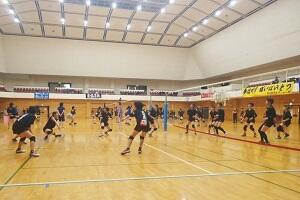

卓球部、新人戦地区大会を快勝
投稿日時 : 2018/10/10
sakura-h
９月２８日（金）、２９日（土）に新人卓球大会第５地区予選会が行われました。選手たちは日頃の成果を発揮し、男子はシングルス優勝、女子は団体、シングルス、ダブルス優勝の３冠を達成することができました。当日応援してくださった保護者の方々、OBの方々、大変ありがとうございました。県大会でも、男女ともベスト８入賞を目指し、頑張ります。
サッカー部 大会結果報告
投稿日時 : 2018/09/25
sakura-h
平成３０年千葉県高等学校サッカー選手権大会結果（2018.7.25）
１回戦 シード
２回戦 佐倉 ２－１ 昭和秀英
３回戦 佐倉 ０－３ 県立船橋
たくさんの応援ありがとうございました。

１回戦 シード
２回戦 佐倉 ２－１ 昭和秀英
３回戦 佐倉 ０－３ 県立船橋
たくさんの応援ありがとうございました。
女子バレー部の紹介ページを更新しました。
投稿日時 : 2018/09/13
sakura-h
カヌー部 夏の大会報告
投稿日時 : 2018/09/05
sakura-h
◇平成３０年度全国高等学校総合体育大会カヌー競技大会
８月３日（金）～８月６日（月）長良川国際レガッタコース（岐阜県海津市）
K2 水田雄眞③／峯大介③_準決勝
K4 水田③／峯③／大川原秀③／黒澤翔梧③_準決勝
C1 瀧澤陸人②_準決勝
C2 樫村衛②／飯野一輝②_準決勝
C4 樫村②／金子誠生②／外岡晴雪②／海老原宏輔③_準決勝
カヤックフォア（K4）は出発直前まであわせきれずに不安を残したままの出発でしたが、現地では連日気温４０度近くなる厳しいコンディションの中、自己ベストを記録するなど集中力と対応力で３年生は最後の大会を漕ぎきりました。
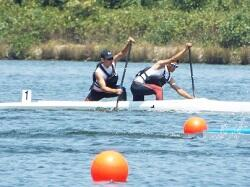
◇文部科学大臣杯 平成３０年度日本カヌースプリントジュニア選手権大会
８月１９日（日）～８月２２日（水）精進湖カヌー競技場（山梨県富士河口湖町）
K1 藤崎雄太②_1次予選 笹浪陽樹②_2次予選
K2 藤崎②／笹浪②_準決勝
WK1 三好ひなた②_予選
C1 金子誠生②_準決勝 外岡晴雪②_1次予選 瀧澤陸人②_準決勝
C1 飯野一輝②_予選 樫村守②_予選
C2 金子②／外岡②_準決勝 樫村②／飯野②_準決勝
C4 金子②／瀧澤②／樫村②／外岡②_決勝9位
県の標準記録を突破した本校２年生８名が千葉県選手団（１６名）の一員として参加しました。
高校カヌーの大会で最もレベルの高い大会の一つで、勝ち上がりが厳しく悔しさの残る大会となりましたが、全国トップレベルのスピードを目の当たりにしてはっきりとした目標を持つことができました。
◇関東高等学校カヌー選手権選抜大会千葉県予選
８月２５日（土）黒部川カヌー場（香取市小見川）
強風のため500mから200mに距離を短縮して行われた結果、９種目２４名の選手が関東地区の新人戦となる関東高等学校カヌー選手権選抜大会（９月１５日（土）～９月１６日（日）精進湖カヌー場（山梨県富士河口湖町））への出場権を獲得しました。新チームのスタートです。

＊夏の大会写真はすべて保護者の方からご提供いただきました。ありがとうございました。
８月３日（金）～８月６日（月）長良川国際レガッタコース（岐阜県海津市）
K2 水田雄眞③／峯大介③_準決勝
K4 水田③／峯③／大川原秀③／黒澤翔梧③_準決勝
C1 瀧澤陸人②_準決勝
C2 樫村衛②／飯野一輝②_準決勝
C4 樫村②／金子誠生②／外岡晴雪②／海老原宏輔③_準決勝
カヤックフォア（K4）は出発直前まであわせきれずに不安を残したままの出発でしたが、現地では連日気温４０度近くなる厳しいコンディションの中、自己ベストを記録するなど集中力と対応力で３年生は最後の大会を漕ぎきりました。
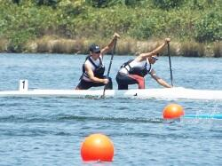
◇文部科学大臣杯 平成３０年度日本カヌースプリントジュニア選手権大会
８月１９日（日）～８月２２日（水）精進湖カヌー競技場（山梨県富士河口湖町）
K1 藤崎雄太②_1次予選 笹浪陽樹②_2次予選
K2 藤崎②／笹浪②_準決勝
WK1 三好ひなた②_予選
C1 金子誠生②_準決勝 外岡晴雪②_1次予選 瀧澤陸人②_準決勝
C1 飯野一輝②_予選 樫村守②_予選
C2 金子②／外岡②_準決勝 樫村②／飯野②_準決勝
C4 金子②／瀧澤②／樫村②／外岡②_決勝9位
県の標準記録を突破した本校２年生８名が千葉県選手団（１６名）の一員として参加しました。
高校カヌーの大会で最もレベルの高い大会の一つで、勝ち上がりが厳しく悔しさの残る大会となりましたが、全国トップレベルのスピードを目の当たりにしてはっきりとした目標を持つことができました。
◇関東高等学校カヌー選手権選抜大会千葉県予選
８月２５日（土）黒部川カヌー場（香取市小見川）
強風のため500mから200mに距離を短縮して行われた結果、９種目２４名の選手が関東地区の新人戦となる関東高等学校カヌー選手権選抜大会（９月１５日（土）～９月１６日（日）精進湖カヌー場（山梨県富士河口湖町））への出場権を獲得しました。新チームのスタートです。
＊夏の大会写真はすべて保護者の方からご提供いただきました。ありがとうございました。
剣道部 大会結果報告
投稿日時 : 2018/09/04
sakura-h

８月２６日（日）に行われた佐倉剣道連盟錬成大会、高校生男子の部（個人戦）で戸井（２年）、野中（２年）が３位入賞、高校一般女子の部（個人戦）で萩原（２年）が優勝、山田（１年）が８位入賞しました。
カヌー部 関東大会報告
投稿日時 : 2018/06/13
sakura-h
６月９日（土）~６月１０日（日）、精進湖カヌー競技場（山梨県富士河口湖町）にて平成３０年度関東高等学校カヌー大会が行われました。
結果、惜しくもシングル種目では決勝進出を逃しましたが、ペア、フォア種目で８組が決勝に進出しました。「個の力で足りない部分を団結力で補う」佐倉高校カヌー部らしい結果となりました。
保護者の皆様、OBの皆様、熱い応援…涙、ありがとうございました。
大会風景は、関東高体連カヌー専門部長でもある本校校長先生の「校長花ごよみ」にもアップされています。
※種目別入賞者（８位以内）丸数字は学年
| K2 | ４位_水田雄眞③／峯大介③ |
| K4 | ３位_水田③／峯③／大川原秀③／秦広大③ |
| ６位_黒澤翔梧③／小長谷拓海③／藤崎雄太②／笹浪陽樹② | |
| WK2 | ８位_丸田紗羽③／夛田菜々恵③ |
| WK4 | ６位_丸田③／夛田③／竹間晴香③／三好ひなた② |
| C2 | ６位_樫村衛②／飯野一輝② |
| ７位_金子誠生②／瀧澤陸人② |
剣道部 市民大会（6.10）報告
投稿日時 : 2018/06/11
sakura-h

６月１０日（日）に行われた市民大会男子個人戦の部で、蘆川（２年）が準優勝､渡辺（３年）、戸井（２年）が３位入賞、女子個人戦の部で、萩原（２年）が優勝、齋藤（３年）が３位入賞しました。
県高校総体陸上競技大会に出場
投稿日時 : 2018/06/05
sakura-h
第2支部予選会（43校）から勝ち抜いた個人種目延べ10種目、男女リレー4種目に出場しました。今年度は関東大会へ進出することは出来ませんでしたが、佐倉高記録などを大幅に更新した生徒、リレーチームが多く、自分達の力は存分に発揮できたと思います。
特に、女子200m、400mに出場した長田 瑛美（佐倉東中学）及び女子リレーチーム【大江（印旛中）稲葉（木刈中）大坂（習志野１中）長田（佐倉東中）】は、4×100mR 県ランキング17位、4×400mR 県ランキング15位となり、今月末に行われる千葉県選手権への進出を決めました。


カヌー部 総合体育大会千葉県予選会・国体県予選会 結果報告
投稿日時 : 2018/05/30
sakura-h
５月２６日（土）・５月２７日（日）に全国高等学校総合体育大会（インターハイ）カヌー競技千葉県予選会および国民体育大会カヌー競技千葉県予選会が香取市の黒部川カヌー場で行われました。
１日目は右からの風が強く厳しい条件でしたが、２日目は晴天で風も弱く絶好のコンディションの中で競技が行われました。
今大会は各種目１位の選手のみが上位大会への出場権を獲得する大会で、ジュニア日本代表の他校選手やU23日本代表選手と競い合いながら、レースごとに選手は成長し可能性を感じることができました。国体県予選会（成年の部）では本校OB・OGで現在大学において活躍している５選手も元気な姿を見せてくれました。
今回も保護者の皆様、OB・OGの皆様、たくさんの応援をいただきありがとうございました。
＊上位大会出場選手
■平成３０年度全国高等学校総合体育大会カヌー競技
長良川国際レガッタコース（岐阜県海津市）８月３日（金）～８月６日（月）
K2－水田雄眞③／峯大介③
K4－水田雄眞③／峯大介③／大川原秀③／黒澤翔梧③
C1－瀧澤陸人②
C2－樫村衛②／飯野一輝②
C4－海老原宏輔③／樫村衛②／金子誠生②／外岡晴雪②
■第７３回国民体育大会カヌー競技関東ブロック大会
神之池特設カヌー競技場（茨城県神栖市）７月８日（日）
K1－水田雄眞③
C1－樫村衛②
C2－金子誠生②／外岡晴雪②
WK1－丸田紗羽③
WK2－竹間晴香③／夛田菜々恵③


 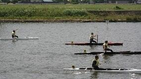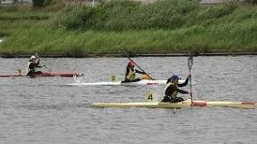
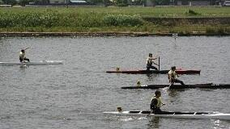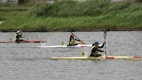
１日目は右からの風が強く厳しい条件でしたが、２日目は晴天で風も弱く絶好のコンディションの中で競技が行われました。
今大会は各種目１位の選手のみが上位大会への出場権を獲得する大会で、ジュニア日本代表の他校選手やU23日本代表選手と競い合いながら、レースごとに選手は成長し可能性を感じることができました。国体県予選会（成年の部）では本校OB・OGで現在大学において活躍している５選手も元気な姿を見せてくれました。
今回も保護者の皆様、OB・OGの皆様、たくさんの応援をいただきありがとうございました。
＊上位大会出場選手
■平成３０年度全国高等学校総合体育大会カヌー競技
長良川国際レガッタコース（岐阜県海津市）８月３日（金）～８月６日（月）
K2－水田雄眞③／峯大介③
K4－水田雄眞③／峯大介③／大川原秀③／黒澤翔梧③
C1－瀧澤陸人②
C2－樫村衛②／飯野一輝②
C4－海老原宏輔③／樫村衛②／金子誠生②／外岡晴雪②
■第７３回国民体育大会カヌー競技関東ブロック大会
神之池特設カヌー競技場（茨城県神栖市）７月８日（日）
K1－水田雄眞③
C1－樫村衛②
C2－金子誠生②／外岡晴雪②
WK1－丸田紗羽③
WK2－竹間晴香③／夛田菜々恵③
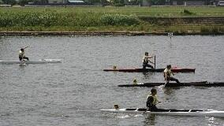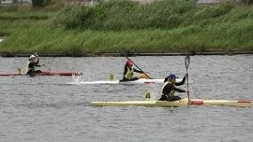 カヌー部 関東大会県予選報告
投稿日時 : 2018/05/15
sakura-h
関東高等学校カヌー大会千葉県予選会は、５月４日（金）に香取市黒部川にて行われる予定でしたが強風のため中止となり、５月６日（日）佐倉市鹿島川に会場変更して行われました。
結果、９種目１９名の選手が６月９日（土）~６月１０日（日）に精進湖カヌー競技場（山梨県）にて行われる関東高等学校カヌー大会への出場権を獲得しました。今年の初漕ぎで鹿島川に誓った関東総合優勝を目指します。
保護者の皆様、OB・OGの皆様、たくさんの応援、写真提供等の御協力をいただきありがとうございました。
※上位成績者（３位以内）丸数字は学年
| K1 | ２位_峯大介③ | ３位_水田雄眞③ | |
| C1 | １位_樫村衛② | ２位_海老原宏輔③ | ３位_金子誠生② |
| K2 | １位_水田③／峯③ | ２位_大川原③／秦③ | ３位_黒澤③／藤崎② |
| WK2 | ３位_丸田③／夛田③ |

陸上競技部 高校総体 第2支部予選会報告
投稿日時 : 2018/05/08
sakura-h
4月28日、29日に成田中台運動公園で県高校総体予選が開かれました。レースに出るだけでなく、応援やペースコントロールなど、全員が力を出し切れるよう協力し臨みました。
陸上競技は、県内の高校を4分割し、各支部の上位者（チーム）が県総体への出場権を得ます。
今回は、のべ１０種目の個人種目、男女の4×100 m リレー、4×400 mリレーの4種目で今月16日から県総合スポーツセンターで開かれる県高校総体進出を決めました。その中でも女子200 m、400 m 、4×100 m リレー、4×400 mリレーに関しては、県総体でも上位入賞が期待されます。


関東高等学校バドミントン大会千葉県予選会
投稿日時 : 2018/05/07
sakura-h
平成３０年５月１日（火）千葉県総合スポーツセンター体育館で関東高等学校バドミントン千葉県予選会に出場しました。
この大会は２複１単の団体戦です。地区ブロック大会では、３位のもと県大会に臨み、
１回戦 佐倉高校 ２－０ 一宮商業高校
２回戦 佐倉高校 ０－２ 敬愛学園高校
という結果となりました。
３年生を中心にとてもまとまり、今までの練習の成果を発揮した結果１回戦一宮商業高校に勝ち、２回戦では千葉県ベスト４の強豪の敬愛学園高校に負けました。
６月上旬に行われる高校総体の地区ブロック大会を勝ち上がり、県大会出場を目指します。
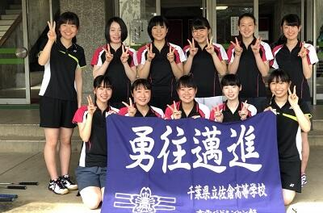
卓球部 千葉県公立高等学校卓球大会大会結果
投稿日時 : 2018/04/26
sakura-h
３月２７日・２９日に千葉県公立高等学校卓球大会がありました。団体戦では、女子卓球部が３位入賞し、昨年度千葉県大会ベスト８の実力を発揮しました。また、個人戦シングルスの部でも２年生（当時）の藤井冴弥子選手が５位に入賞しました。
また、４月２０日・２２日には関東大会第５地区予選がありました。団体戦は、男子が準優勝、女子が推薦（前回新人選でベスト８に入ったので予選がなし）。個人戦シングルスでは、男子の鈴木康太選手が第３位、女子の藤井冴弥子選手が優勝、髙橋瞳実選手が準優勝、亀田実来選手・大金千夏選手がそれぞれ３位入賞し、女子はベスト４を佐倉が独占しました。ダブルスでは、男子の鈴木康太・松本悠汰組が優勝、女子の藤井冴弥子・亀田実来組が推薦、大金千夏・髙橋瞳実組が準優勝しました。
日頃から協力いただいている保護者、OBの皆様に感謝申し上げます。
剣道部 大会報告
投稿日時 : 2018/04/23
sakura-h
平成３０年４月２２日（土）、芝山町農業者トレーニングセンターで行われた第６５回県関東個人第５地区予選会男子の部で、石崎文弥（３年）が優勝しました。
「第30回佐倉チューリップフェスタ」に音楽部が出演しました。
投稿日時 : 2018/04/20
sakura-h
４月１４日（土）佐倉ふるさと広場で８曲（アンコールを含む）演奏しました。オランダの風車をバックに、美しいチューリップに囲まれて歌うことは、部員にとっても楽しみなライブです。佐倉市様、公益社団法人佐倉市観光協会様、ご来場いただきました皆様、どうもありがとうございました。
音楽部終演御礼
投稿日時 : 2018/03/28
sakura-h
平成３０年３月２５日、プリミエール酒々井文化ホールにて、音楽部第８回定期演奏会は終演いたしました。多数のお客様に御来場いただき、誠にありがとうございました。
剣道部大会報告
投稿日時 : 2017/11/06
 部活動担当
部活動担当
平成２９年度佐倉市文化祭剣道大会、高校生の部にて、
男子優勝 石崎 ２位 蘆川 ３位 岡野、山本
女子優勝 萩原
平成２９年度東部地区高等学校剣道大会、男子団体３位
化学部「神楽坂サイエンスアカデミー報告」
投稿日時 : 2017/09/28
部活動担当
■平成２９年９月２３日（土）
東京理科大学川村研究室と株式会社インターネットイニシアティブ（ＩＩＪ）主催の「神楽坂サイエンスアカデミー成果発表会」に参加しました。北海道、群馬、東京の三会場をテレビ会議システムで結んだ三元中継形式で行われ、全国から書類審査で選ばれた１０チームが発表しました。本校は、６月１１日（日）の第１回研修会（開会式を含む）、７月２４日（月）の第２回研修会（中間発表）を経て、約３か月間取り組んできた自作風車による風力発電の発電効率の研究成果を発表しました。今回、発電量が大きな風車を作製できたので、講評の際、“学会発表を目指して、さらに研究をしてみては。”という励ましをいただきました。
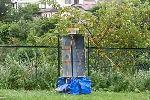
陸上部大会報告
投稿日時 : 2017/08/31
部活動担当
８月１９日に関東陸上競技選手権大会が埼玉県熊谷市にある熊谷スポーツ文化公園で開かれました。この大会は年齢制限の無い日本選手権に繋がる大会です。女子４００ハードルに江本侑代（３年）が出場しましたが、残念ながら入賞を果たすことは出来ませんでした。
また、翌週２７日には全国高等学校陸上競技選抜大会が大阪市にある長居陸上競技場（ヤンマーフィールド）で行われました。この大会はIHには無い種目や他種目への挑戦を目的にした大会です。江本侑代（３年）が挑戦し、新たな可能性を見いだしました。
化学部活動報告
投稿日時 : 2017/08/01
部活動担当
■平成２９年７月２４日（月）
東京理科大学川村研究室と株式会社インターネットイニシアティブ（ＩＩＪ）主催の神楽坂アカデミー中間発表会に参加しました。
このアカデミーは、「ものインターネット（ＩｏＴ：Internet of Things）」の技術を活用し、風車による風力発電機の発電効率の改良を試みることを目的としています。
東京理科大学とＩＩＪのアドバイスを受けながら、全国１０校の高校生が、９月下旬の最終発表会を目指し活動しています。
■平成２９年７月２８日（金）、２９日（土）の両日、東邦大学の夏休み理科教室に参加しました。
「ナノ物質を作って見てみよう」というテーマの講座では、ナノ物質についての講義に続き、金ナノクラスターの生成実習、金ナノクラスターの電子顕微鏡による観察、フラーレン混合物からC60 の分離実習、ナノ炭素（フラーレン、カーボンナノチューブなど）の模型の作製を体験しました。
「身近な高分子材料に触れてみよう」というテーマの講座では、高分子化合物についての講義に続き、6,6－ナイロンの合成と赤外線吸収スペクトル法（ＩＲ法）による生成物の確認実習、ポリビニルアルコール（ＰＶＡ）と二色性色素を用いて、「延伸法」による偏光フィルムの作成と作成した偏光フィルムを用いた観察を体験しました。
東京理科大学川村研究室と株式会社インターネットイニシアティブ（ＩＩＪ）主催の神楽坂アカデミー中間発表会に参加しました。
このアカデミーは、「ものインターネット（ＩｏＴ：Internet of Things）」の技術を活用し、風車による風力発電機の発電効率の改良を試みることを目的としています。
東京理科大学とＩＩＪのアドバイスを受けながら、全国１０校の高校生が、９月下旬の最終発表会を目指し活動しています。
■平成２９年７月２８日（金）、２９日（土）の両日、東邦大学の夏休み理科教室に参加しました。
「ナノ物質を作って見てみよう」というテーマの講座では、ナノ物質についての講義に続き、金ナノクラスターの生成実習、金ナノクラスターの電子顕微鏡による観察、フラーレン混合物からC60 の分離実習、ナノ炭素（フラーレン、カーボンナノチューブなど）の模型の作製を体験しました。
「身近な高分子材料に触れてみよう」というテーマの講座では、高分子化合物についての講義に続き、6,6－ナイロンの合成と赤外線吸収スペクトル法（ＩＲ法）による生成物の確認実習、ポリビニルアルコール（ＰＶＡ）と二色性色素を用いて、「延伸法」による偏光フィルムの作成と作成した偏光フィルムを用いた観察を体験しました。
関東高等学校陸上競技大会など 結果報告
投稿日時 : 2017/07/04
部活動担当
6月17日に南・北関東大会が千葉県総合スポーツセンターで開かれました。南関東大会には、東京都・神奈川県・山梨県・千葉県の各都県入賞者が進出してきます。
女子４００ハードルに江本侑代（３年）が出場しましたが、残念ながら山形インターハイ参加資格を得ることは出来ませんでした。しかし、翌週に行われた千葉県陸上競技選手権大会（次年度日本選手権選考会）において６位入賞を果たし、８月末に埼玉県熊谷市で行われる関東陸上競技選手権大会への進出を決めました。
なお、千葉県陸上競技選手権大会には男子槍投げに福田力（３年）、女子４×４００ｍリレー：長田瑛美（２年）、稲葉志穂（１年）、大江陽奈（２年）、大坂樹李（２年）も出場しました。
自転車競技関東大会
投稿日時 : 2017/06/20
部活動担当
石倉悠之介さん（３年）が６月１２日（月）に静岡県日本サイクルセンターで行われた関東大会自転車競技の個人ロードレース（60km）に出場し、１２９人中１６位でインターハイへの出場権を獲得しました。
なお、インターハイの自転車競技は７月２７日～３０日に開催され、個人ロードレース（99.3km）は最終日７月３０日に福島県の石川町・浅川町周回特設コースで行われます。
バスケットボール部県大会報告
投稿日時 : 2017/06/19
部活動担当
６月１７日、１８日に千葉市内で高等学校総合体育大会の千葉県大会が行われ、バスケットボール部男女そろって出場しました。結果は以下のとおりです。保護者の皆様、OB・OGの皆様、たくさんの応援をいただきありがとうございました。
女子：
佐倉 ●38－49 国府台
男子：
佐倉 ○69－67 千葉日大一
佐倉 ○73－67 東金商業
佐倉 ○71－60 市川南 （ベスト１６進出）
佐倉 ●46－124 市立船橋
弓道部大会報告
投稿日時 : 2017/06/19
部活動担当
関東高等学校弓道大会、インターハイ予選千葉県大会に出場しました。大会結果は次のとおりです。
■関東高等学校弓道大会 千葉県予選
女子団体：出場
女子個人：建部 光瑠（３年）、藤井 栞里（２年）の２名が出場
男子団体：３位 関東大会出場
男子個人：藤野 俊幸（３年）、北島 壮一（２年）、中島 呂維（２年）、安田舜（３年）の４名が出場
■関東高等学校弓道大会 本戦
男子団体：決勝トーナメント進出、ベスト１６
男子個人：北島 壮一（２年）６位入賞
■インターハイ 千葉県予選
女子団体：出場
男子団体：決勝進出、５位
男子個人：北島 壮一（２年）８位入賞
カヌー部大会報告
投稿日時 : 2017/06/14
部活動担当
≪大会報告≫
平成２９年６月１０日（土）～６月１１日（日）に精進湖カヌー場（山梨県富士河口湖町）において関東８都県２４校２１２名の選手による「平成２９年度関東高等学校カヌー大会」が行われ、本校からは９種目１８名の選手が出場しました。入賞結果は次のとおりです。
男子 総合２位
カヤックペア 伊藤翔紀③／田中大貴③…４位
カヤックフォア 伊藤翔紀③／田中大貴③／染谷光輝③／水田雄眞②…３位
カナディアンシングル 本田哲平③…４位 吉岡樹哉③…５位
カナディアンペア 本田哲平③／杉嶋鉄也③…優勝
カナディアンフォア 本田哲平③／杉嶋鉄也③／吉岡樹哉③／大内健吾③…優勝
女子 総合３位
カヤックペア 山下萌③／古﨑未来③…５位
カヤックフォア 山下萌③／古﨑未来③／丸田紗羽②／竹間晴香②…３位
≪大会予定≫
７月１６日（日）国民体育大会関東ブロック大会（山梨県・精進湖カヌー場）・６名出場
８月６日（日）～８月１０日（木）全国高等学校総合体育大会カヌー競技〈2017南東北総体〉
（山形県・月山湖カヌースプリント競技場）・８名出場
平成２９年６月１０日（土）～６月１１日（日）に精進湖カヌー場（山梨県富士河口湖町）において関東８都県２４校２１２名の選手による「平成２９年度関東高等学校カヌー大会」が行われ、本校からは９種目１８名の選手が出場しました。入賞結果は次のとおりです。
男子 総合２位
カヤックペア 伊藤翔紀③／田中大貴③…４位
カヤックフォア 伊藤翔紀③／田中大貴③／染谷光輝③／水田雄眞②…３位
カナディアンシングル 本田哲平③…４位 吉岡樹哉③…５位
カナディアンペア 本田哲平③／杉嶋鉄也③…優勝
カナディアンフォア 本田哲平③／杉嶋鉄也③／吉岡樹哉③／大内健吾③…優勝
女子 総合３位
カヤックペア 山下萌③／古﨑未来③…５位
カヤックフォア 山下萌③／古﨑未来③／丸田紗羽②／竹間晴香②…３位
※○数字は学年
≪大会予定≫
７月１６日（日）国民体育大会関東ブロック大会（山梨県・精進湖カヌー場）・６名出場
８月６日（日）～８月１０日（木）全国高等学校総合体育大会カヌー競技〈2017南東北総体〉
（山形県・月山湖カヌースプリント競技場）・８名出場
バスケットボール部大会報告
投稿日時 : 2017/06/09
部活動担当
６月３日～５日に高等学校総合体育大会の地区予選が行われ、バスケットボール部女子が出場しました。
１日目・２日目は佐倉東高校・八街高校とリーグ戦を行い、全勝で代表決定トーナメントの進出を決めました。最終日のトーナメント戦では印旛明誠高校・東京学館高校と対戦し、両試合とも大差をつけ勝利しました。すでに出場が決まっている男子とともに、６月１７日から始まる県大会に出場します。応援よろしくお願いします。
剣道部大会報告
投稿日時 : 2017/05/29
部活動担当
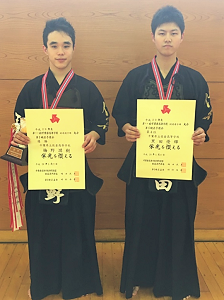
《大会報告》
平成２９年５月２７日（土）、芝山町農業者トレーニングセンターで行われた第７０回千葉県高等学校総合体育大会剣道大会第５地区予選会男子個人戦の部で、梅野潤樹（３年）が優勝、黒田優輝（３年）が第４位に入賞し、県大会に出場することになりました。県大会は、６月１７日（土）男女個人戦（ゼットエー武道場、市原市）で行われます。
また、本校剣道部は６月２４日（土）男子団体戦（成田市体育館）、６月２５日（日）女子団体戦（成田市体育館）にも出場します。
ラグビー部大会結果報告
投稿日時 : 2017/05/24
部活動担当
平成２９年度関東高等学校ラグビーフットボール大会千葉県予選
2回戦 佐倉○ 117－0 昭和秀英（前半45－0）
3回戦 佐倉○ 22－21 検見川（前半5－21）
準々決勝 佐倉● 7－49 日体大柏（前半0－21）
5位決定戦 佐倉○ 17－14 千葉日大一（前半12－7）
最終順位5位
４月１５日の昭和秀英戦から始まり、５位決定戦の千葉日大一戦まで、苦しい戦いを強いられながら４試合戦い抜いた。まだまだ成長途中ではあるが、新人戦からの成長と秋の全国大会予選への手ごたえを感じることができた。秋の全国大会予選へ向けて益々精進していきたいと思う。
大会中はＯＢ始め父母会及び父母会・ＯＢの多くの関係者の皆様に御支援御声援をいただきました。この場をお借りしてお礼申し上げます。
- 左側4枚の写真は ｖｓ検見川及び ｖｓ日体大柏（黒とエンジのジャージが佐倉高校）
- 右側4枚の写真は ｖｓ千葉日大一（白のジャージが佐倉高校）
剣道部大会報告・行事報告
投稿日時 : 2017/05/23
部活動担当
《大会報告》
平成２９年５月１２日・１３日・１４日、成田市体育館で行われた第６４回関東高等学校剣道大会千葉県予選会において、男子団体戦ベスト３２、女子団体戦ベスト１６となりました。
《行事報告》
平成２９年５月２１日（日）、本校体育館にて佐倉高校中学剣道錬成会が行われ、県内から３９校が参加しました。次回は、７月１日（土）を予定しています。
平成２９年５月１２日・１３日・１４日、成田市体育館で行われた第６４回関東高等学校剣道大会千葉県予選会において、男子団体戦ベスト３２、女子団体戦ベスト１６となりました。
《行事報告》
平成２９年５月２１日（日）、本校体育館にて佐倉高校中学剣道錬成会が行われ、県内から３９校が参加しました。次回は、７月１日（土）を予定しています。
関東高等学校ソフトボール大会千葉県予選会
投稿日時 : 2017/05/19
部活動担当
平成29年5月12日から16日まで女子ソフトボールの県大会が開催され、本校は準々決勝で千葉英和高校には敗れましたが、県ベスト8の成績を上げました。以下は大会結果です。
1回戦 本校 対 東金商業高戦 7－0 で5回コールド勝ち（稲毛海浜公園野球場）
2回戦 本校 対 鎌ケ谷高戦 5－1 で勝利【ベスト8】（県総合運動場）
準々決勝 本校 対 千葉英和高戦 0－8 で5回コールド負け（県総合運動場）
※6月開催の総合体育大会千葉県予選にはCシード校として出場し、エース千葉（3年）を中心に頑張ります。応援よろしくお願いします。